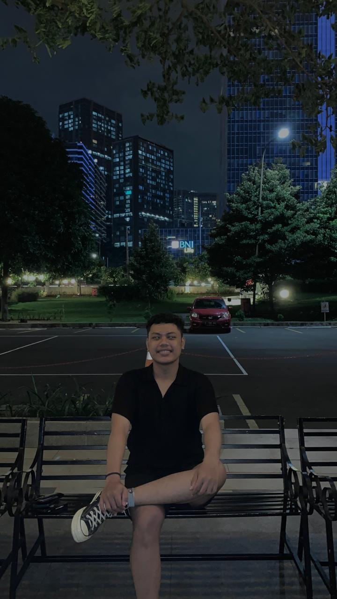

Pengembang Web yang berfokus pada struktur kode yang bersih, performa database yang optimal, dan pengujian kualitas perangkat lunak.

Saya memiliki ketertarikan kuat pada **Object-Oriented Programming (OOP)** untuk membangun arsitektur sistem yang modular dan mudah dikelola. Saya juga fokus pada **Software Quality Assurance**, memastikan setiap modul yang saya kembangkan lulus uji fungsionalitas dan performa sebelum diterbitkan ke lingkungan produksi.
Manajemen sirkulasi buku dengan batasan hak akses yang tegas untuk administrator dan pustakawan.
Dikembangkan selama masa kerja praktek (internship) untuk mengontrol operasi CRUD pada stok barang.
Implementasi *hashing* keamanan login dan fitur cetak slip gaji presisi menggunakan PHP OOP.
Saya terbuka untuk kolaborasi proyek, diskusi teknis, atau peluang kerja magang.
Kirim Pesan Ke Email Saya